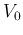
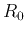
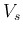
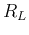

Next:
About this document ...
Up:
ccc
Previous:
Summary of First Half
Basic Laws
Ohm's law, KVL, KCL, voltage/current divider
Non-ideal voltage source:  in series with 
Non-ideal current source: in parallel with
Conversion between current and voltage sources:
The source-load view of circuit: The source  in series with ; the load .
The voltage across and the current through are related by
The load can be replaced by any other component, such as non-linear diode, transistor, etc.
Ruye Wang 2019-05-27